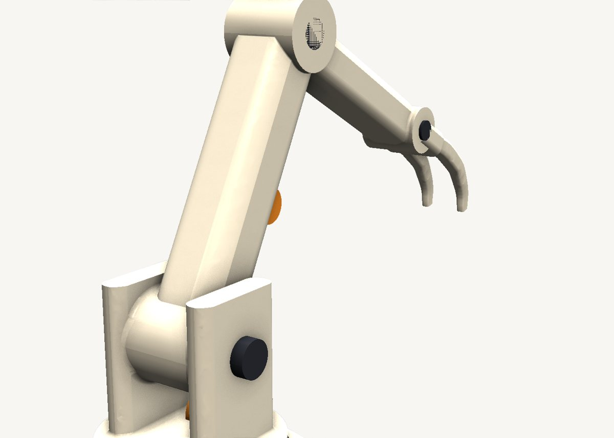
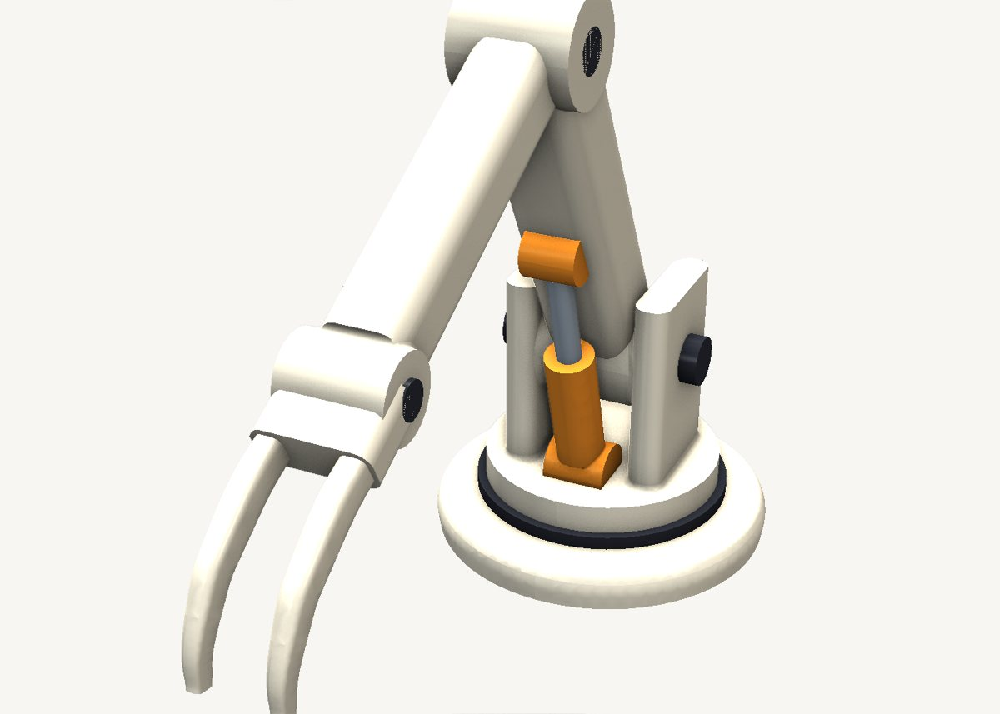

How to model a robot arm in SweeperCAD
A posable mechanical arm from twenty sweeps: beams, round bosses at every pivot, a gripper, pins and a working-looking piston. Drag a beam's spine to pose it; the parts follow.
Download the model Get SweeperCAD (free)
20 objects · 190 × 77 × 138 mm · free to use, no credit needed (CC0)



How it is built
- Base and turretTwo short circular sweeps stacked on each other - extrusions are just sweeps along a straight spine.
- Beams are rounded rectangles along a lineThe upper arm and the forearm are rounded rectangles swept from pivot to pivot. Move a pivot point on the spine and the beam follows.
- A boss at every pivotEach joint is a round boss across the beam end, a little wider than the beam so their faces overlap instead of coinciding - that keeps the boolean and the fillet happy.
- Built big to smallThe combine tree fuses the body first, then each part that sits on it, then the details. Each combine rounds over only the seam it made, so the blends stay cheap and robust.
- Hardware in its own colourPins, the turntable ring and the piston are separate groups with their own colours, combined at the end - and they export to 3MF with those colours.
Open it and pull on it
Download the model, open it with SweeperCAD and it lands on your asset shelf. Place it, then select any part: its profile, spine and scale graph are right there to drag, and everything downstream rebuilds - fillets included. Every curve stays editable; nothing is ever baked.
More examples
Teapot Nautilus shell Potted plant Robot Elliptic-wing fighter · the whole library · first-objects tutorial